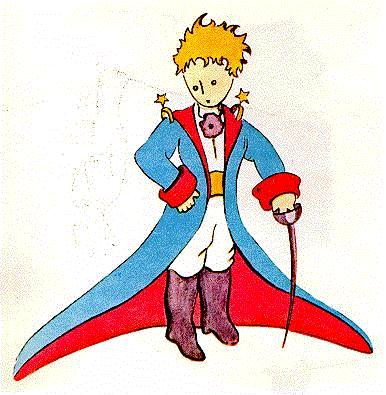
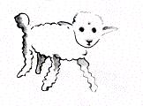
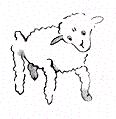
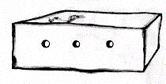

Viví entonces solo, sin nadie con quien hablar en serio, hasta que sufrí una avería en el desierto del Sahara hace seis años. Algo se había roto en mi motor. Y como no tenía conmigo ni mecánico ni pasajeros, me dispuse a intentar lograr yo solo una reparación difícil. Era para mí una cuestión de vida o muerte. Apenas tenía agua para beber ocho días.
La primer noche me dormí entonces sobre la arena, a mil millas de cualquier lugar habitado. Estaba realmente más aislado que un náufrago sobre una balsa en medio del océano. Se imaginan entonces mi sorpresa, al amanecer, cuando una extraña vocecita me despertó. Decía:
- Por favor... dibújame un cordero !
- Eh! 
- Dibújame un cordero...
Me paré de un salto, como si hubiera sido alcanzado por un rayo. Me froté bien los ojos. Miré bien. Y vi un extraordinario hombrecito que me examinaba con seriedad. He aquí el mejor retrato que pude luego hacer de él. Pero mi dibujo, sin duda, es mucho menos encantador que el modelo. No es mi culpa. Había sido desalentado en mi carrera de pintor por las personas mayores, a la edad de seis años, y no había aprendido a dibujar más que las boas cerradas y las boas abiertas.
Miré entonces esta aparición con los ojos bien abiertos por la sorpresa. No olviden que me encontraba a mil millas de cualquier lugar habitado. Sin embargo mi hombrecito no me parecía ni perdido, ni muerto de cansancio, ni muerto de hambre, ni muerto de sed, ni muerto de miedo. No tenía para nada el aspecto de un niño perdido en medio del desierto, a mil millas de cualquier lugar habitado. Cuando logré finalmente hablar, le dije:
- Pero... qué haces acá ?
Y entonces me repitió, muy dulcemente, como una cosa muy seria:
- Por favor... dibújame un cordero...
Cuando el misterio es demasiado impresionante, no es posible desobedecer. Por absurdo que me pareciese a mil millas de todos los lugares habitados y en peligro de muerte, saqué de mi bolsillo una hoja de papel y una pluma. Pero entonces recordé que había estudiado sobre todo geografía, historia, matemática y gramática y le dije al hombrecito (con un poco de mal humor) que no sabía dibujar. Me respondió:
- No importa. Dibújame un cordero.
Como yo nunca había dibujado un cordero, rehice para él uno de los dos únicos dibujos que sabía: el de la boa cerrada. Y quedé estupefacto al escuchar al hombrecito responderme:
- No! No! No quiero un elefante dentro de una boa. Una boa es muy peligrosa, y un elefante es muy voluminoso. En casa es todo pequeño. Necesito un cordero. Dibújame un cordero.
Entonces dibujé. 
Miró con atención, y luego:
- No! Este ya está muy enfermo. Hazme otro.
Yo dibujé:
Mi amigo sonrió amablemente, con indulgencia:
- Fíjate bien... no es un cordero, es un carnero. Tiene cuernos...
Rehice entonces nuevamente mi dibujo: 
Pero fue rechazado, como los anteriores:
- Este es demasiado viejo. Quiero un cordero que viva mucho tiempo.
Entonces, colmada la paciencia, como tenía apuro en comenzar a desarmar mi motor garabateé este dibujo. 
Y le espeté:
- Esta es la caja. El cordero que quieres está adentro.
Pero me sorprendí mucho al ver que se iluminaba el rostro de mi joven juez:
- Es exactamente así que lo quería ! Crees que este cordero necesite mucha hierba ?
- Por qué ?
- Porque en casa es todo pequeño...
- Seguramente le alcanzará. Te di un cordero bien pequeño.
Inclinó la cabeza hacia el dibujo:
- No tan pequeño... Mira! Se durmió...
Y fue así como conocí al principito.
| Commencement | |
Comienzo |
| Chapitre II | Índice | |
| Chapitre III | Capítulo III |